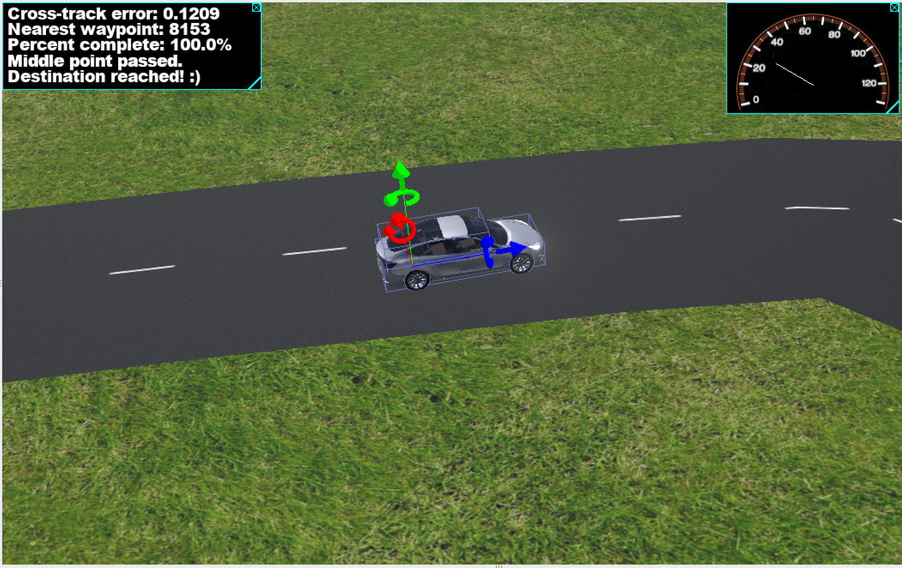
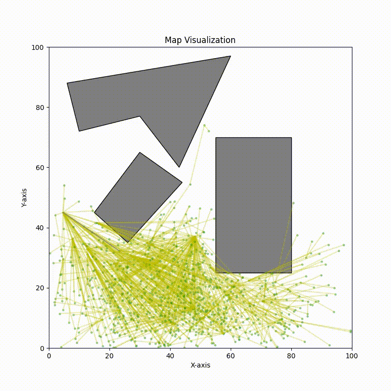
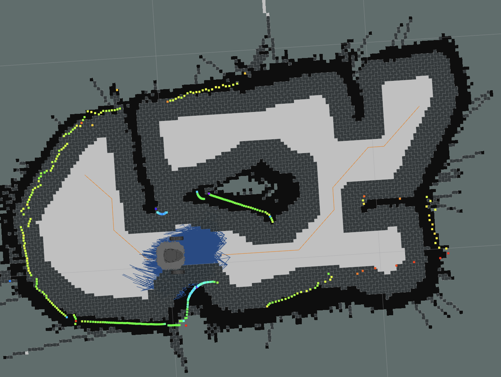
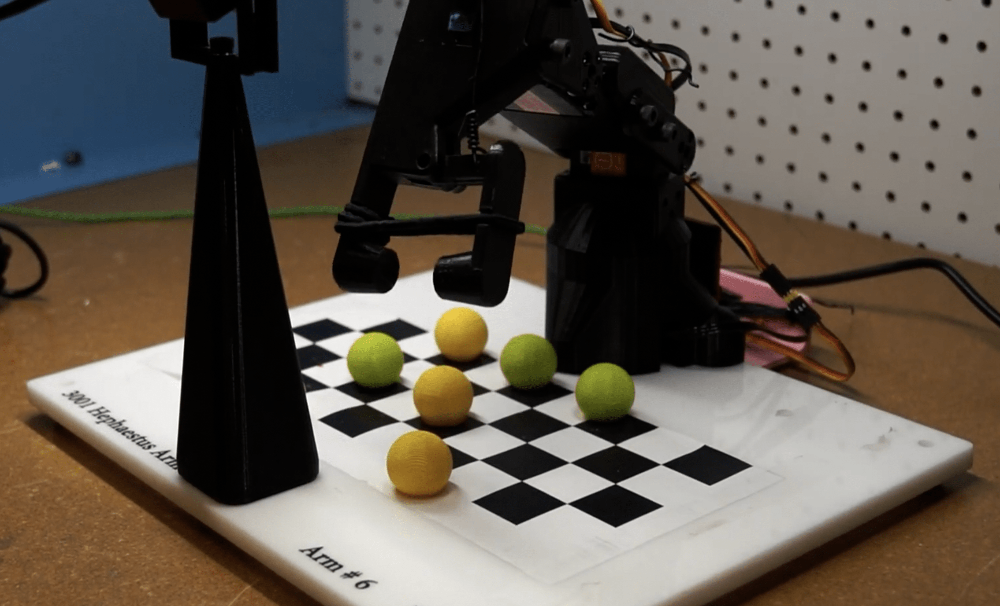
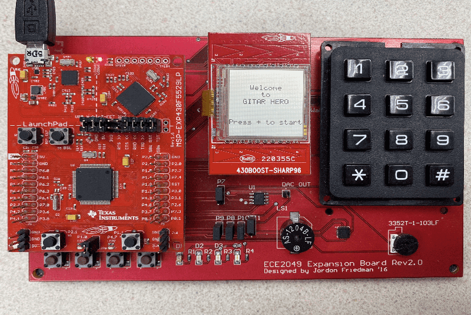
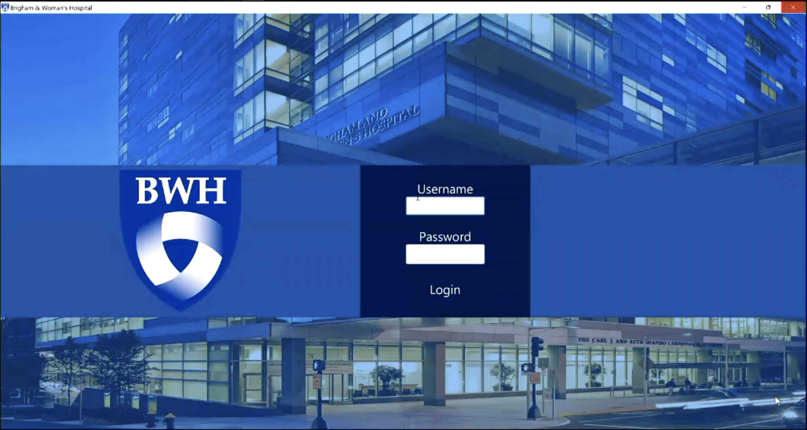
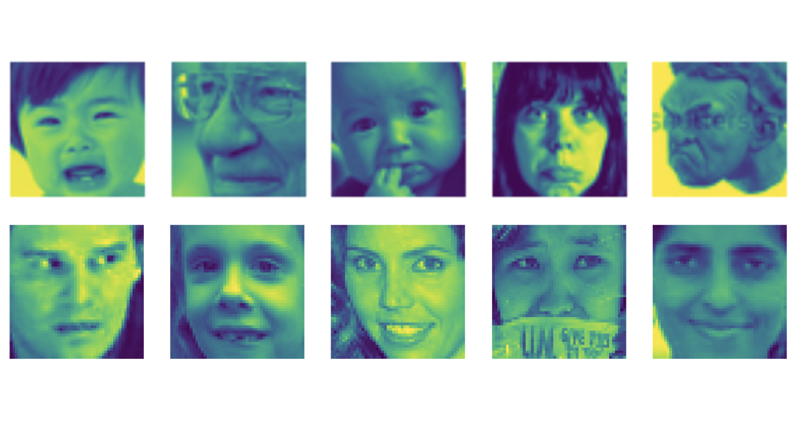
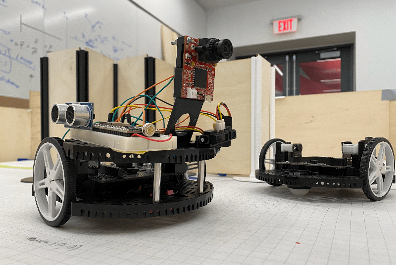
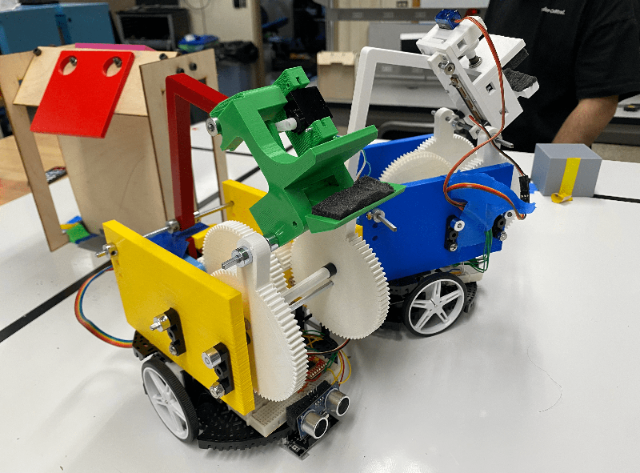

My research interest is in exploring new approaches for turning design idea into reality.
This includes automating the design process with Geometry Processing
and exploring new fabrication methods with Additive Manufacturing.
DeformX: A Versatile Co-Simulation Framework for Deformable Linear Objects
- Developed a co-simulation framework integrating Cosserat rod physics with NVIDIA Isaac Sim for realistic DLO simulation.
- Generated WireSeg-32k dataset (32,000 synthetic images) achieving 10.2% mAP@75 improvement in wire segmentation.
- Demonstrated sim-to-real transfer with 6.6 cm mean error on UR5e rope-swinging task.
- This research is submitted to IROS 2025.
- [View more]
[Paper]
Conformal Aerosol Jet Additive Manufacturing
- Introduce an approach to designing integrated circuit that is conformal to provided geometry.
- Built multi-axis conformal printing with robot arm to fabricate functional circuits.
- This research is published at CASE 2025.
- [View more]
[Video]
[Video Abstract]
Siemens Electronic Assembly Process Tracking Project
- Developed integrated system for Siemens’ battery assembly division to monitor and verify human assembly.
- Designed and implemented safety-aware robot arm and camera system for collaborative human–robot assembly.
- Built human action recognition software that interprets and provides corrective feedback on assembly procedures.
Anchor Alignment Adaptive Weighting for Robust Domain Generalization
- Developed novel algorithm leveraging NLP anchors to enhance domain generalization and noise robustness.
- This research is under review at Transactions on Machine Learning Research (TMLR).
- [View more]
[Paper]
[Poster]
Software Tool for Routing Efficiently Advanced Macrofluidics
- Introduce a software based workflow that generates printable fluidic networks automatically.
- Provide a library of fluidic components to implement any logic circuit.
- This research is published at Advanced Robotics Research Journal.
- [View more]
[Paper]
[Video]
Vision-based Close-loop FDM Printing for Fabricating Airtight Structures
- Introduce a system to greatly improve print quality of FDM printer with computer vision.
- [View more]
[Paper]
[Video]
Wheel Up: A Wheelchair Training Simulator for Rehabilitation
- Developed a wheelchair simulator game to provide training for wheelchair users.
- [View more]
[Paper]
[Video]
Fully 3D Printed Fluidic Logic for Soft Robots Using FDM
- Introduce a pneumatically powered compliant mechanism that is analogous to a CMOS transistor.
- Demonstrate using this device to control various soft robots.
- [Paper]
Design and Fabrication of Soft Pneumatic Circuits
- Investigate the feasibility of using FDM 3D printing as fabrication method of soft circuits.
- Introduce a fully 3D-printable design of Bi-stable Valve.
- [Paper]
[Video]
Quadruped with Supplementary Limb for Enhanced Mobility
- Researched into quadruped motion planning and developing adaptive planner solving at real time.
- [View more]
Adhesive EEG Device for Enhanced Comfort
- Built a prototype of a wearable EEG device that is more compact, comfortable for the patient, and low cost.
- [View more]
Class Projects
PCB Defect Detection with Deep Neural Network

Tesla Car Control in Simulation

Implementation of Motion Planning Algorithms
[Code]

Torque Based Generic Serial Arm Solver and Simulator
[Code]

Lidar Based SLAM Robot
[Video]
[Code]

Vision Based Robot Arm for Tic-Tac-Toe
[Video]
[Code]

Little Games with MSP-EXP430
[Video]
[Code]

Service Management Software for Birmingham Women's Hospital
[Code]

Activation Function Design for Fack Face Detector
[Code]
Emotion Classification Mechine Learning Model
[Code]

IR Based Mapping Robot

Simi-Auto Plate Delivery Robot
